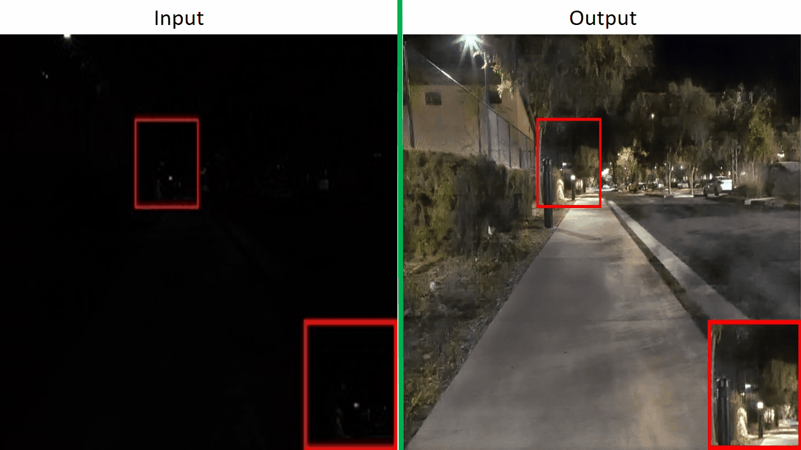
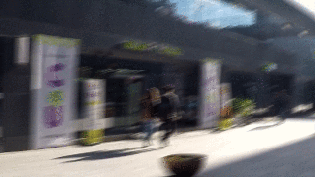

About Project


Introduction
This project is about image restoration in which degraded image like noising,blurring,
low Resolution lowlight_enhanced put into model and then model(MIRNETv2)
process image through multiple-stages after that model give a fine output.
After we get clear image from model then an object detection model (in this case FASTER RCNN) apply on the output of MiRNETv2,
then we get an image in which every object is detected. Despite of image we train our model train on video in which each frame is first restore,
then FASTER RCNN is used for object detection in the video. Addition part in the video is that you just must put YouTube link that you want to process. Code will download video from given link, processed it and download video in the given path of directory.
After that we put this whole model in the form of web application, in which we
use flask framework in the back-end and html, CSS and bootstrap (for responsiveness) in the front-end.
Tool used for this project are following:
- Pytorch
- Numpy
- Matplot
- Html,CSS
- Bootstrap
- Flask
Beside of this I also use some other libraries like Numpy, Basic-Sr Pytorch tool box , TorchVision etc. Software used for this project are :
- Google collab
- Visual Studio Code
Image Demo
Instruction
Follow below steps:
- You have to choose any degraded image
- Press load button
- Press process image button
After these steps final output will be visible after processing automatically.
Source code

Google Collab
Here is the Link of colab Note book where video demo implemented and also other code.
Jovain
Here is the Link of colab Note book where video demo implemented and also other code. This note book is same like colab
About Me
Hi ! i'm M.Ahmed Naseer
I’m from Gujranwala. Currently third-year student at Pieas. I’m enthusiastic about machine learning and development. I have keen interest in both fields, but I am more focused on machine learning and deep learning. In addition to this, I am always working on improving my skills and growing professionally.
I am interested in finding opportunities to expand my professional experience in machine learning and development, and I am open to any positions in these fields.
Additionally, I enjoy working in challenging and diverse environments and thrive in collaborative settings.
- E-mail: codeblooded69@gmail.com
- Occupation: Student